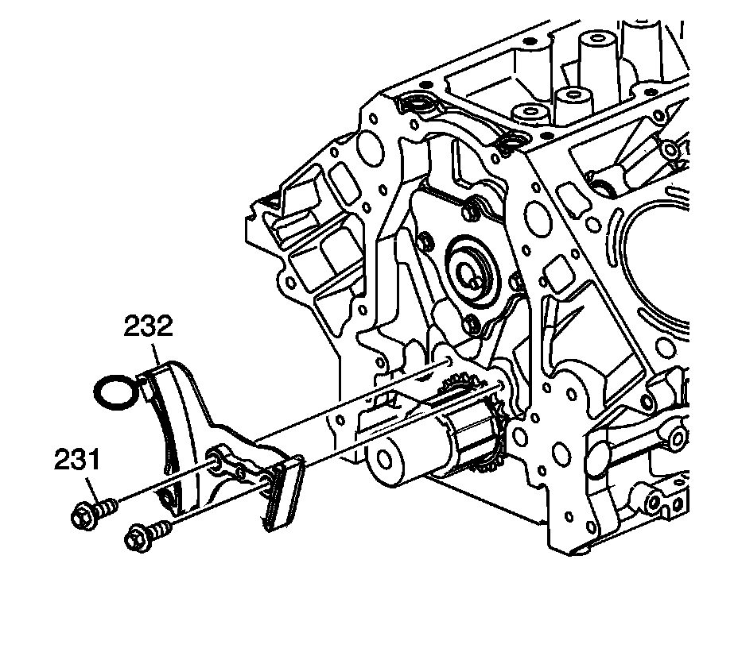

Timing Components: Specifications
Front Cover Bolts 25 N.m (18 lb ft)
Timing Chain Tensioner
Install the timing chain tensioner (232) and bolts (231).
Tighten the bolts to 25 N.m (18 lb ft).
Crankshaft Balancer Bolt
Installation Pass - to Ensure the Balancer is Completely Installed
Tighten to 330 N.m (240 lb ft)
First Pass - Install a NEW Bolt
After the Installation Pass and Tighten as Described in the First and Final Passes 50 N.m (37 lb ft)
Final Pass 140 degrees